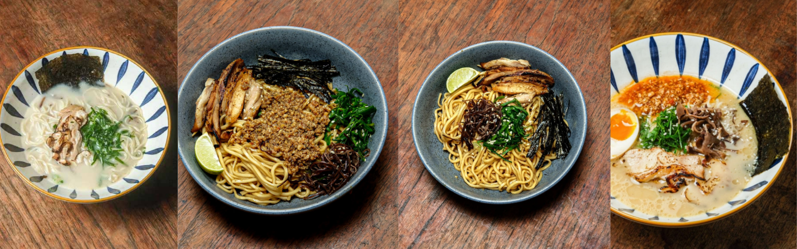

Masakan Jepang (日本料理, nihon ryōri, nippon ryōri) adalah makanan yang dimasak dengan cara memasak yang berkembang secara unik di Jepang dan
menggunakan bahan makanan yang diambil dari wilayah Jepang dan sekitarnya. Dalam bahasa Jepang, makanan Jepang disebut nihonshoku atau washoku. Masakan dan makanan Jepang tidak selalu harus berupa "makanan yang sudah dimakan orang Jepang secara turun temurun."
Makanan orang Jepang berbeda-beda menurut zaman, tingkat sosial, dan daerah tempat tinggal. Cara memasak masakan Jepang banyak meminjam cara memasak dari negara-negara Asia Timur dan negara-negara Barat. Di zaman sekarang, definisi makanan
Jepang adalah semua makanan yang dimakan orang Jepang dan makanan tersebut bukan merupakan masakan asal negara lain. Dalam arti sempit, masakan Jepang
mengacu pada berbagai berbagai jenis makanan yang khas Jepang. Makanan yang sudah sejak lama dan secara turun temurun dimakan orang Jepang, tetapi
tidak khas Jepang tidak bisa disebut makanan Jepang.
 Instagram Kami
Instagram Kami